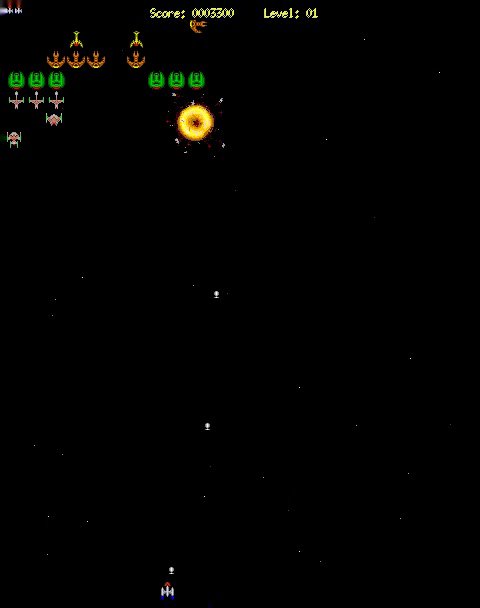

XGalaga
This article describes about XGalaga version 2.1.1.
Description
XGalaga is a space shooting game. You are a space ship. Your role is destroying enemies with fire and some items.
You can control the space ship with a mouse, as well as a keyboard. When you push k key at the title screen, you use a keyboard. When you push any mouse button or m key, you use a mouse. The space ship keeps firing while you keep a left button pushing.
XGalaga has sounds.
xgalaga will start with full screen by default. If you
dislike it, you can add the -window option.